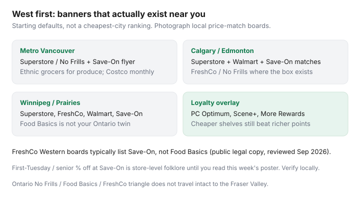

Food & Groceries · Canada
Western Canada grocery strategy: Save-On-Foods, Superstore, and FreshCo without overpaying
Ontario-centric grocery advice assumes Food Basics on the corner and a No Frills / FreshCo war. A lot of Western Canada does not. Save-On-Foods (Pattison / More Rewards), Real Canadian Superstore, Walmart, and — where the box exists — FreshCo or No Frills are the actual map. Importing a Mississauga rotation into Surrey or Saskatoon is how you drive past the cheap store toward a banner that is not there.
This is a West-first system: who is open where, More Rewards without treating it like a second job, community and senior discount folklore you must verify locally, price-match boards that name Save-On instead of Food Basics, a Costco split for Prairie and B.C. households, and ethnic grocers that beat warehouse produce in Vancouver and Calgary. Confirm the poster at your store. Chains change boards.
Disclosure: Cashback portals, grocery gift cards, Costco memberships, and co-branded loyalty cards are offer types. Saving Optimizer may earn a commission if we later add partner links. We do not currently claim Save-On-Foods, Sobeys, Loblaw, or Costco partnerships. More Rewards and first-Tuesday percentages are store-level until you read this week’s sign. Nothing here requires a click.
Key takeaways
- Start from banners that exist near you: Superstore, Save-On, Walmart, plus FreshCo or No Frills if the box is actually in town.
- FreshCo’s public Western competitor board typically lists Save-On-Foods, not Food Basics (legal copy reviewed Sep 2026).
- More Rewards is a real overlay at Save-On — still weaker than a cheaper Superstore or matched FreshCo shelf.
- First-Tuesday / senior % off at Save-On is widely rumoured and inconsistently documented. Ask the service desk; do not build a year on a directory site.
- Ethnic grocers in Vancouver and Calgary are often the produce and pulse discounter. Costco remains monthly bulk, not a weekly produce run.
Western banner availability differences
Food Basics is a Metro Ontario (and limited) discounter. It will not appear on a Calgary FreshCo board. Maxi is Quebec. The West’s cheap-ish set is Superstore, Walmart, Save-On-Foods, No Frills where Loblaw put one, FreshCo / Chalo! FreshCo in some cities, and Co-op in parts of the Prairies.

| Banner | Loyalty | Notes |
|---|---|---|
| Real Canadian Superstore | PC Optimum | Workhorse box in B.C. and the Prairies; ad match at many locations |
| Save-On-Foods | More Rewards | Pattison; flyer proteins; price match reported widely — confirm locally |
| FreshCo / Chalo! | Scene+ | Not every city; 1¢ beat vs listed competitors |
| No Frills | PC Optimum | Patchy in B.C. relative to Ontario; still Won’t Be Beat where it exists |
| Walmart Supercentre | Card only | No competitor grocery ad match; no Amex at many tills |
| Safeway / Sobeys | Scene+ | Full-service; use for exceptions or a stacked offer, not milk |
Northern and remote pricing is its own market. Do not import a Vancouver Costco haul into a fly-in grocery bill.
Save-On More Rewards / points basics (high level)
More Rewards is Save-On’s coalition program (also at other Pattison banners). Public redemption math has long been in the neighbourhood of 10,000 points = $15 off with a minimum purchase — confirm in the current app, because issuers tweak floors. Earn is offers plus base spend, not a PC Optimum clone.
Treat More Rewards like Scene+ or PC: load the week, redeem on a real grocery total, do not drive 20 minutes to a more expensive Save-On “for points.” If Superstore is $14 cheaper on the same list, the points did not win. Details on stacking cards belong in grocery cards and gift-card cashback — portal exclusions still apply.
First Tuesday / community discount habits to verify locally
Western directories in 2026 disagree with each other. Some list Save-On as 10% off Tuesdays for 65+ at B.C. stores; others list 15% off the first Tuesday of the month for everyone at participating locations. Save-On’s own flyer site does not make a national promise on the homepage. That is your cue.
Verify before you move payday: ask the service desk, read this week’s in-store poster, and check exclusions (alcohol, tobacco, lottery, already-reduced items). Community Facebook groups go stale. Co-op senior days are a different chain with a different calendar.
If a real percentage off exists at your store, it can beat a week of More Rewards. If it does not, you built a commute around a rumour. London Drugs’ first-Tuesday senior event is housewares/health, not a grocery system.
Price match boards in AB/BC/SK/MB
FreshCo’s Lowest Price Guarantee legal copy (reviewed Sep 2026) names typical Western competitors as No Frills, Superstore, Walmart, and Save-On-Foods, and sells the identical eligible item for 1¢ less, often with a four-unit cap. Ontario boards swap in Food Basics. Photograph this store. Walkthrough: FreshCo Lowest Price Guarantee.
Superstore and No Frills run their own ad-match / Won’t Be Beat language — 4-unit caps, identical items, no loyalty-only prices, no spend-X. Save-On price matching is widely reported in Canadian roundups; it is still local. Walmart Canada does not match competitor grocery ads. Do not drive to Walmart “to price match.”
Flipp (or Reebee) is the proof drawer. Same craft as Flipp price matching: complete ad, in-date, identical SKU.
Costco + discounter split for Prairie/B.C. households
Calgary and Edmonton treat Costco as a municipal sport. The math does not change: Gold Star if you finish bulk; discounter for flyer proteins and produce you will eat in five days; Executive later. Couples: small-household framework. Families: family grocery budgeting.
Prairie kilometres are a cost. A 40-minute warehouse run every Saturday is a different product than a monthly restock on the way to the city. Fuel, winter, and a truck already in town matter. Gas at Costco is Gold Star value when it is on the route — not Executive 2%.
Ethnic grocers for produce in Vancouver/Calgary
T&T, independent Chinese and South Asian grocers, Persian and Middle Eastern shops, and Calgary’s International Avenue / Vancouver’s Richmond–Kingsway belt routinely beat Superstore on greens, herbs, tofu, and 20 kg rice. That is not a “treat aisle.” It is the produce discounter.
- Shop produce and pulses there on a commute. Do not add a fourth Saturday stop for $4 of cilantro if you will wilt it.
- Unit price still wins: a beautiful mango pile can lose to frozen fruit at Costco.
- No PC Optimum, no More Rewards. The shelf is the loyalty program.
Put the chosen fulfilment store into a Sunday loop and stop re-litigating Ontario blogs. The West has a banner set. Use it.
Sources & date stamps
- FreshCo Lowest Price Guarantee public legal copy: Western competitor set including Save-On-Foods (reviewed Sep 2026).
- Real Canadian Superstore ad-match collection page: 4-unit cap, identical items, exclusion list (reviewed 20 Sep 2026).
- More Rewards public redemption language (confirm live app; 10,000 points / $15 has been the long-running sketch).
- Senior / first-Tuesday Save-On claims: Canadian Seniors Directory and similar 2026 listings — conflicting, labelled as verify-locally in this article.
- Flipp / True Canadian Finds price-match roundups; PFC split-shop threads.
Frequently asked questions
What is the cheapest grocery store in Western Canada?
There is no provincial winner. Superstore, Walmart, Save-On, FreshCo, and No Frills (where present) trade weeks. Ethnic grocers often win produce. Run a 12-item list plus this week’s protein flyer. Full-service Safeway/Sobeys is usually the lighting premium.
Does Save-On-Foods still do a first-Tuesday discount?
Maybe at your store. Public directories disagree (senior Tuesday vs first-Tuesday for all shoppers). Save-On does not make a clear national homepage promise. Ask the desk and read the poster this week.
Can I price match Save-On at FreshCo?
In B.C., Alberta, Saskatchewan, and Manitoba, FreshCo’s published competitor set typically includes Save-On-Foods. The item must be identical and on that store’s board. FreshCo sells it for 1¢ less, often up to four units. Photograph the board.
Is More Rewards worth shopping Save-On every week?
Only if Save-On’s shelves plus flyer plus any verified community discount beat Superstore or a matched FreshCo. Points on a higher shelf are a hobby.
Where do Vancouver and Calgary shoppers buy produce cheaper?
Often at ethnic grocers, not at Costco clamshell volumes. Use Costco for frozen fruit and bulk pantry; use T&T and independents for greens you will cook this week.